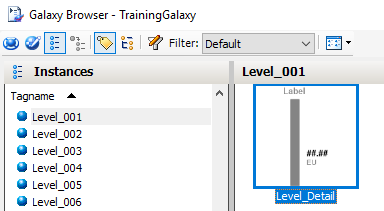
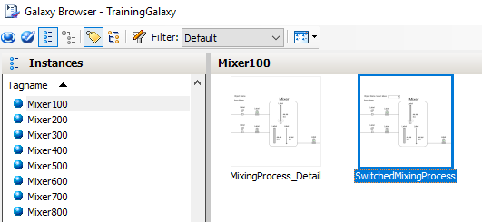

Source: AVEVA InTouch for System Platform 2023 Training Manual, Module 3 (pages 145–148)
This lesson covers how graphics are embedded in and associated with automation objects, including inserting symbols from objects and selecting alternate symbols.
Reference: Module 3, Section 3 (pages 145–146)
From a graphics perspective, symbols added to automation objects are referenced like any other attribute within that object — using the symbol's unique name. When you need to embed a symbol into another symbol or into a WindowMaker window, the Galaxy Browser provides two workflows: you can select the Template Toolbox button to embed a symbol from a template, or the Instances button to embed a symbol from an existing instance.

Automation objects can include more than one symbol. The Select Alternate Symbol feature allows you to replace an embedded symbol with another symbol belonging to the same instance. This feature is available in both the Graphic Editor and WindowMaker.
To access this feature from the Graphic Editor, either select the embedded symbol and go to Edit → Embedded Symbol → Select Alternate Symbol, or right-click the symbol and select Embedded Symbol → Select Alternate Symbol. From WindowMaker, select the embedded symbol, go to Edit → Industrial Graphic "<name>" → Select Alternate Symbol, or right-click and use the equivalent context menu option.

Reference: Module 3, Section 3 (pages 143–144)
When working with graphics in automation objects, there are two distinct approaches: linked symbols and added symbols. Understanding the difference is critical for choosing the right approach.
When adding or linking a symbol in a template object, the symbol propagates to all derived objects and cannot be removed from them. You can add or link symbols from the Content pane on the Attributes tab in the Object Editor — the Add button creates a new internal symbol, while the Link Content button opens the Galaxy Browser to select a symbol from the Graphics tab.
When configuring graphics, you can use relative references — references that traverse up the object hierarchy to parent objects. Valid relative references include:
Me — the current objectMyArea, MyContainer, MyEngine, MyHost, MyPlatform — parent containers in the hierarchyRelative references are resolved at runtime when the graphic is displayed. This is what allows a single graphic in a template to work across all its derived instances — the Me keyword resolves to the specific instance name at runtime.
1. What is the difference between linking a symbol to an automation object and adding a symbol to one?
Linked symbols create an association with a Graphics tab symbol that can be shared across multiple objects. Added symbols are natively stored inside the object and can be customized locally. Deleting an object deletes added symbols but not linked symbols.
2. Why can't the Select Alternate Symbol feature be used with symbols originating from the Graphics tab?
Graphics tab symbols are not part of any automation object, so they don't have the concept of multiple alternate symbols within the same object instance. Select Alternate Symbol only works with symbols that are native to an automation object.
3. What happens to relative references like "Me" at runtime?
Relative references are resolved at runtime when the graphic is displayed. The "Me" keyword is replaced with the actual name of the instance displaying the graphic, allowing a single template graphic to work across all derived instances.
4. When you link a symbol from a template object to a derived object, can the derived object remove that symbol?
No. Symbols inherited from a template object through linking cannot be removed from derived objects.
Module 3 — Symbols. AVEVA InTouch for System Platform 2023 Training.
Next: Lesson 14 — Lab 6 – Creating the Mixer Components